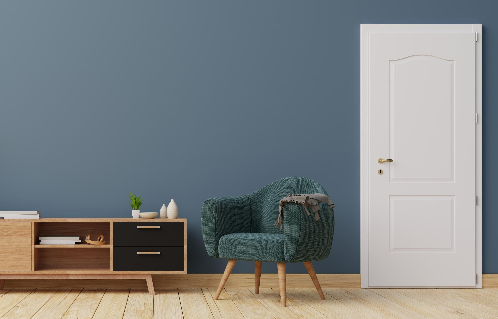

Explore
Discover door collections, finishes, and completed spaces that bring design ideas into focus.
Knowledge & support
A well-designed door is only the beginning. Our resource library brings together the guidance, documentation, and inspiration you need to plan with confidence, install with precision, and protect your investment for years to come.
Built around your project
Every successful project depends on informed decisions. Whether you are comparing designs, preparing an opening, reviewing performance requirements, or confirming long-term coverage, Erdoor makes essential information easy to find and simple to use.
These resources are created for architects, contractors, distributors, designers, and homeowners—bringing product knowledge and practical support together in one considered experience.
Discover door collections, finishes, and completed spaces that bring design ideas into focus.
Use clear installation guidance and product information to plan every detail before work begins.
Review performance testing, technical records, certificates, and warranty coverage with confidence.
Resource library
Six focused destinations give you direct access to Erdoor knowledge, documentation, and design inspiration.

See the recommended process for preparing, fitting, aligning, and completing an Erdoor interior door installation.
Watch installation
Observe how a complete Erdoor door assembly performs during controlled fire-resistance testing.
Watch the test
Understand warranty coverage, eligibility, exclusions, claims, and return conditions in our interactive document.
Read warranty
Access organized product literature, technical information, performance reports, and supporting certificates.
View documents
Explore Erdoor designs, natural-looking finishes, coordinated details, and ideas for considered interiors.
Visit gallery
Browse the complete Erdoor collection, profiles, finishes, and product details in an interactive flipbook.
View catalogProject support
Our team can help with project documentation, product selection, technical questions, and sample requests.